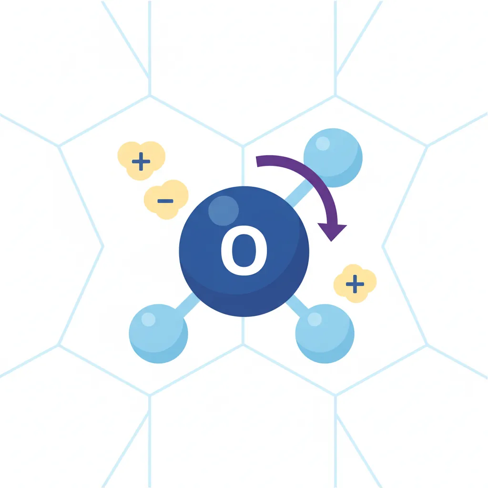
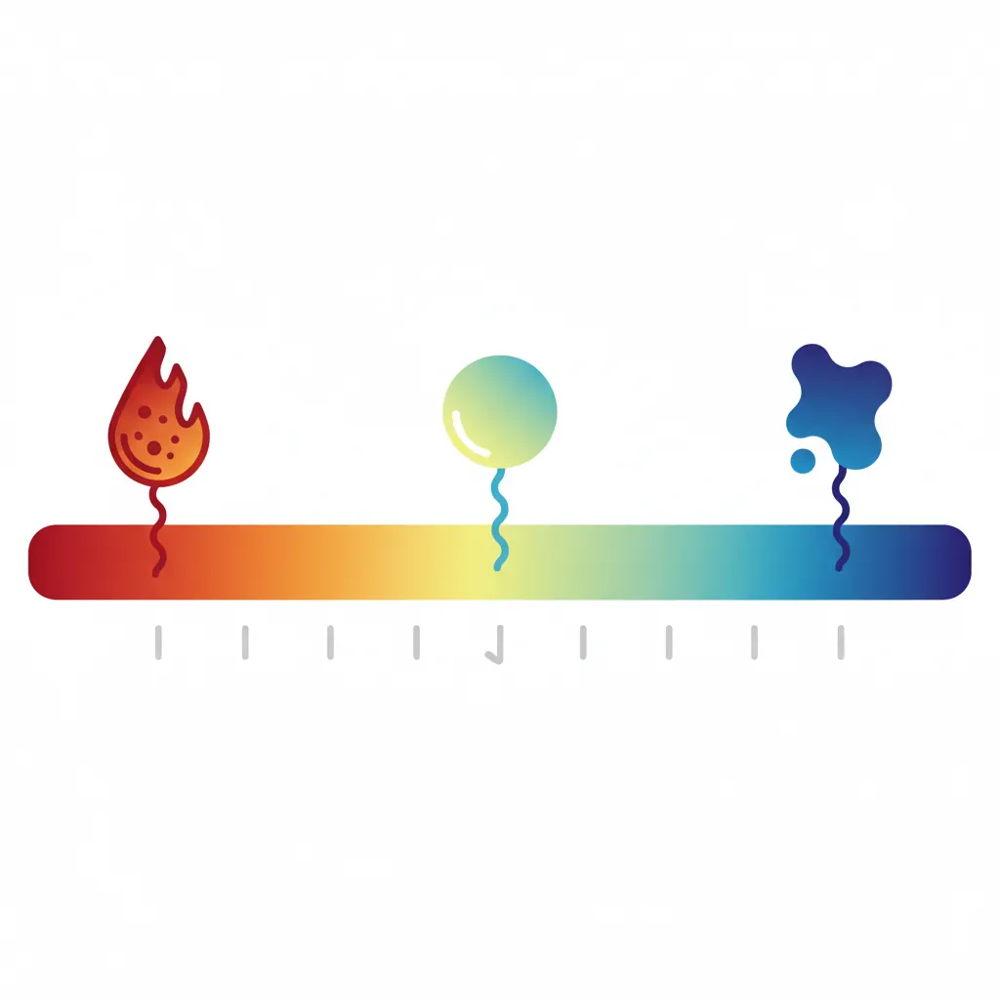
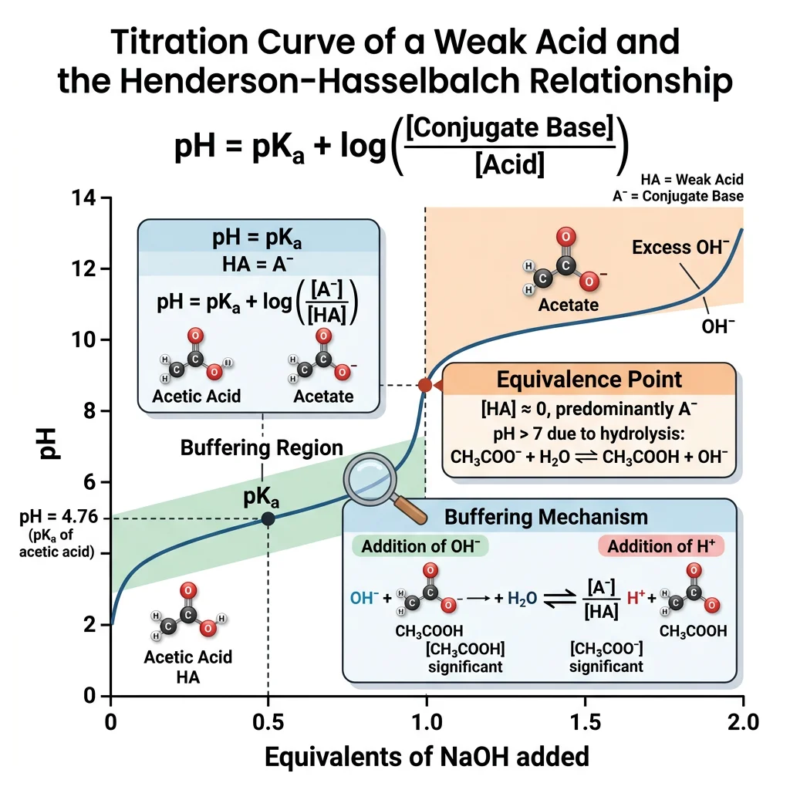
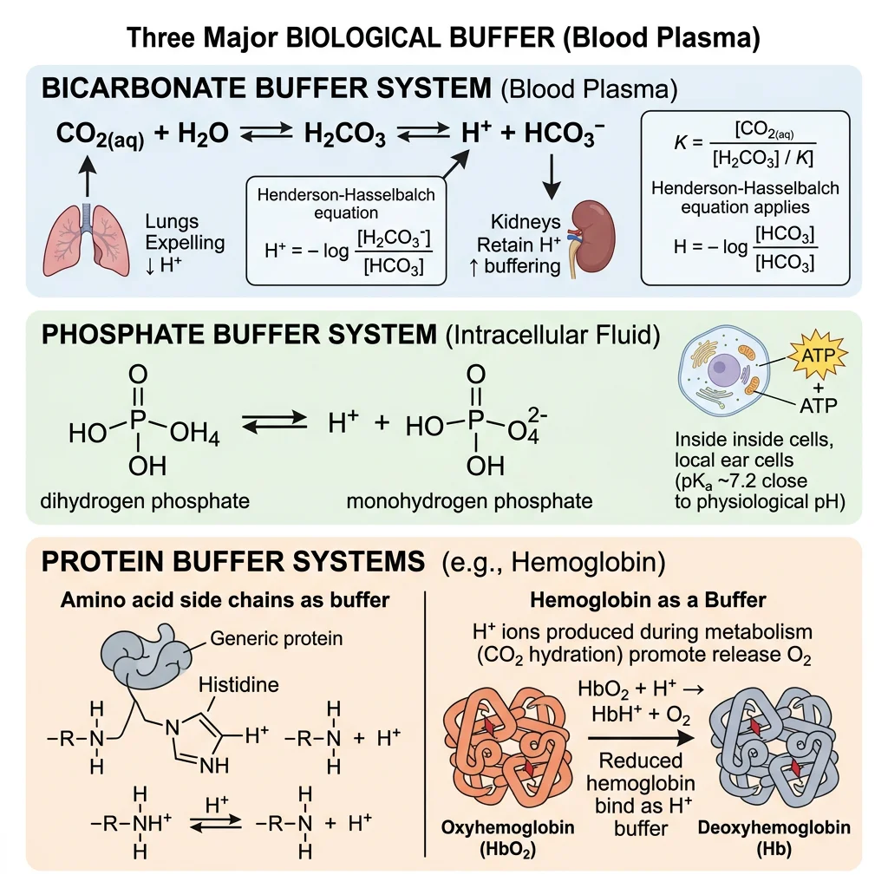
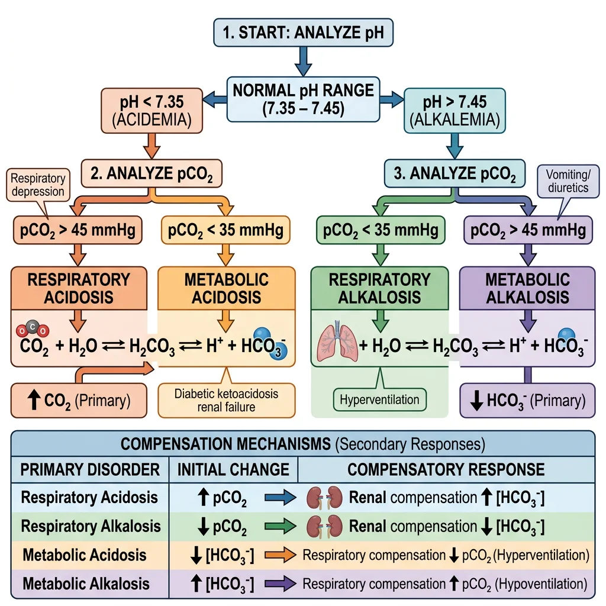

Biochemistry Mastery
Biological Chemistry Fundamentals
Atoms, bonds, functional groups, thermodynamicsWater, pH & Biological Buffers
Water polarity, pH, Henderson-Hasselbalch, blood buffersAmino Acids & Protein Structure
Amino acid classes, peptide bonds, protein foldingEnzymes & Catalysis
Kinetics, Michaelis-Menten, inhibition, regulationCarbohydrates & Lipids
Sugars, glycogen, fatty acids, cholesterol, membranesMetabolism & Bioenergetics
ATP, glycolysis, gluconeogenesis, redox carriersCitric Acid Cycle & Oxidative Phosphorylation
Acetyl-CoA, ETC, ATP synthase, oxygen dependenceSignal Transduction & Cell Communication
GPCRs, kinases, calcium, hormone cascadesNucleic Acids & Gene Expression
DNA, replication, transcription, translation, epigeneticsBrain & Nervous System Biochemistry
Neurotransmitters, ion gradients, myelin, neurodegenerationHeart & Muscle Biochemistry
Cardiac metabolism, actin-myosin, energy systemsLiver Biochemistry
Glucose homeostasis, detox, urea cycle, bileKidney Biochemistry & Acid-Base
pH regulation, ion transport, hormonal functionsEndocrine System Biochemistry
Hormone classes, signaling, glucose & stress controlDigestive System Biochemistry
Gastric acid, enzymes, bile, absorption, microbiomeImmune System Biochemistry
Antibodies, cytokines, complement, oxidative burstAdipose Tissue & Energy Balance
Triglycerides, lipolysis, leptin, obesityTissue-Specific Metabolism
Fed vs fasting, organ fuel selection, starvationMolecular Basis of Disease
Diabetes, cancer metabolism, neurodegenerationClinical Biochemistry & Diagnostics
Blood tests, liver/kidney markers, lipid panelsWater Properties
Water is arguably the most important molecule in biology. Although deceptively simple — just two hydrogen atoms covalently bonded to one oxygen atom — water's unique physical and chemical properties underpin virtually every biochemical reaction. Life as we know it evolved in an aqueous environment, and no organism can survive without water. In this section, we explore why water behaves the way it does and how its properties create the ideal medium for life.

The Water Molecule: Structure & Polarity
Oxygen is more electronegative (3.44 on the Pauling scale) than hydrogen (2.20), so the shared electrons in each O–H bond are pulled closer to the oxygen nucleus. This unequal electron distribution creates a permanent dipole moment of 1.85 Debye. The molecule adopts a bent geometry with a bond angle of approximately 104.5° (compared to the ideal tetrahedral angle of 109.5°), because oxygen's two lone electron pairs repel each other and the bonding pairs.
Think of water like a tiny magnet: one end (oxygen) carries a partial negative charge (δ−) and the other end (hydrogens) carries a partial positive charge (δ+). This polarity is the master key that unlocks nearly all of water's extraordinary properties.
The Charged Rod Experiment
When a charged plastic rod (rubbed with wool) is brought near a thin stream of water flowing from a burette, the stream visibly deflects toward the rod. This elegant demonstration proves water's polarity at the macroscopic scale. The δ+ hydrogens rotate toward a negatively charged rod, and the δ− oxygen rotates toward a positively charged rod, producing a net attractive force that bends the stream.
Hydrogen Bonding
The single most important consequence of water's polarity is its ability to form hydrogen bonds. A hydrogen bond occurs when a hydrogen atom covalently bonded to an electronegative atom (like O or N) is attracted to a lone pair on another electronegative atom.
In liquid water at any instant, each molecule participates in an average of 3.4 hydrogen bonds with neighboring water molecules, creating a dynamic, flickering network that constantly breaks and reforms on a picosecond timescale (~10−12 seconds). Although each individual hydrogen bond is weak (~20 kJ/mol, compared to ~460 kJ/mol for an O–H covalent bond), the collective effect of billions of hydrogen bonds confers extraordinary properties.
Properties Arising from Hydrogen Bonding
| Property | Value for Water | Comparison (H₂S) | Biological Significance |
|---|---|---|---|
| Boiling Point | 100°C | −60°C | Liquid at physiological temperatures; enables aqueous biochemistry |
| Specific Heat Capacity | 4.18 J/(g·K) | 1.00 J/(g·K) | Buffers organisms against rapid temperature fluctuations |
| Heat of Vaporization | 2,260 J/g | 547 J/g | Evaporative cooling (sweating) is highly effective |
| Surface Tension | 72.8 mN/m | ~26 mN/m (est.) | Allows insects to walk on water; capillary action in plants |
| Density of Ice | 0.917 g/cm³ | Denser as solid | Ice floats, insulating aquatic ecosystems beneath |
Analogy — The Velcro Effect: Imagine each hydrogen bond as a single hook-and-loop fastener (Velcro). One hook is easy to pull apart. But if you cover an entire surface with thousands of tiny hooks (like water's extensive H-bond network), the collective grip becomes formidable. That's why water has such unusually high boiling points and heat capacities compared to molecules of similar molecular weight.
Solvent Properties
Water is often called the "universal solvent" — a slight exaggeration, but one rooted in truth. Water dissolves more substances than any other common liquid. Its ability to dissolve compounds depends on the type of solute:
Ionic Compounds (Electrolytes)
When NaCl dissolves, water molecules surround each Na⁺ and Cl⁻ ion in an organized arrangement called a hydration shell (or solvation shell). The δ− oxygen atoms point toward cations, while the δ+ hydrogen atoms point toward anions. The energy released from forming these ion-dipole interactions (the hydration enthalpy) must be comparable to or greater than the lattice energy to dissolve the crystal.
Polar Molecules
Sugars, amino acids, and small alcohols dissolve via hydrogen bonds and dipole-dipole interactions with water. Glucose, for instance, has five hydroxyl (–OH) groups that readily hydrogen-bond with water, making it highly soluble (~900 g/L at 25°C).
Nonpolar Molecules — The Hydrophobic Effect
Nonpolar molecules like fats and oils cannot participate in hydrogen bonding. When forced into water, they disrupt the H-bond network. Water molecules organize into ordered "cages" (clathrate-like structures) around the nonpolar solute, which is entropically unfavorable. The system minimizes this penalty by driving nonpolar molecules together — the hydrophobic effect.
The Hydrophobic Effect: Entropic, Not Enthalpic
Charles Tanford's landmark 1980 book The Hydrophobic Effect demonstrated that the driving force behind nonpolar aggregation in water is entropy, not enthalpy. When nonpolar molecules cluster together, the ordered water cages around them are released, increasing the overall entropy of the system. The free energy equation ΔG = ΔH − TΔS shows that even if ΔH is slightly unfavorable, a large positive TΔS term makes the overall process spontaneous (ΔG < 0).
Amphipathic Molecules
Molecules with both polar and nonpolar regions (amphipathic) orient themselves at water interfaces. Phospholipids, for example, arrange their polar head groups toward water and their fatty acid tails away from water, spontaneously forming bilayer membranes. Detergents and bile salts exploit the same principle, forming micelles that emulsify fats. This self-assembly behavior is entirely driven by water's properties — no biological machinery required.
import numpy as np
# Demonstrate hydration energy calculation
# Hydration enthalpy vs lattice energy determines solubility
compounds = {
'NaCl': {'lattice_energy': 786, 'hydration_energy': 783, 'soluble': True},
'KBr': {'lattice_energy': 672, 'hydration_energy': 679, 'soluble': True},
'AgCl': {'lattice_energy': 905, 'hydration_energy': 851, 'soluble': False},
'BaSO4': {'lattice_energy': 2423, 'hydration_energy': 2295, 'soluble': False},
'CaCl2': {'lattice_energy': 2195, 'hydration_energy': 2247, 'soluble': True},
}
print("Compound | Lattice (kJ/mol) | Hydration (kJ/mol) | ΔE (kJ/mol) | Soluble?")
print("-" * 78)
for name, data in compounds.items():
delta = data['hydration_energy'] - data['lattice_energy']
prediction = "Yes" if delta >= 0 else "No"
actual = "Yes" if data['soluble'] else "No"
match = "✓" if prediction == actual else "≈"
print(f"{name:8s} | {data['lattice_energy']:17d} | {data['hydration_energy']:18d} | {delta:+11d} | {actual:3s} {match}")
print("\nNote: Positive ΔE (hydration > lattice) favors dissolution")
print("Entropy contributions also play a role in real solubility")
The pH Scale
The concentration of hydrogen ions (H⁺ — or more precisely, hydronium ions H₃O⁺) in a solution has a profound effect on virtually every biochemical process. Because these concentrations span many orders of magnitude, the Danish chemist Søren Sørensen introduced the pH scale in 1909 while working at the Carlsberg Laboratory in Copenhagen (yes, the beer company funded foundational biochemistry research!).

pH = −log₁₀[H⁺]
Similarly, pOH = −log₁₀[OH⁻], and at 25°C: pH + pOH = 14 (since Kw = [H⁺][OH⁻] = 1.0 × 10⁻¹⁴).
The Autoionization of Water
Pure water undergoes a very slight autoionization (self-dissociation):
H₂O ⇌ H⁺ + OH⁻
At 25°C, only about 1 in every 555 million water molecules is ionized at any given moment. The ion product of water (Kw) equals 1.0 × 10⁻¹⁴, giving pure water a [H⁺] of 1.0 × 10⁻⁷ M, corresponding to pH 7.00 — neutral.
Analogy: Imagine a stadium with 555 million spectators (water molecules). At any instant, only ONE person stands up (ionizes). Yet that one person's behavior affects the entire stadium — just as tiny changes in [H⁺] dramatically alter enzyme activity and protein structure.
The Logarithmic Nature of pH
Because pH is logarithmic, each one-unit change in pH represents a 10-fold change in [H⁺]. A solution at pH 3 has 10× more H⁺ than one at pH 4, and 10,000× more H⁺ than one at pH 7. This has a critical clinical implication:
| pH | [H⁺] (M) | Example Solution | Character |
|---|---|---|---|
| 1 | 10⁻¹ (0.1) | Gastric acid (stomach) | Strongly acidic |
| 2 | 10⁻² | Lemon juice | Acidic |
| 4.5 | ~3.2 × 10⁻⁵ | Lysosome interior | Mildly acidic |
| 6.1 | ~7.9 × 10⁻⁷ | Skeletal muscle cytosol | Slightly acidic |
| 7.0 | 10⁻⁷ | Pure water (25°C) | Neutral |
| 7.2 | ~6.3 × 10⁻⁸ | Cytoplasm (typical) | Near neutral |
| 7.4 | ~4.0 × 10⁻⁸ | Blood plasma | Slightly alkaline |
| 8.0 | 10⁻⁸ | Mitochondrial matrix | Mildly alkaline |
| 13 | 10⁻¹³ | Oven cleaner (NaOH) | Strongly alkaline |
Biological pH Ranges
Different cellular compartments maintain distinct pH values tailored to their function. This pH compartmentalization is a hallmark of eukaryotic cell biology:
pH Compartmentalization in the Cell
The lysosome maintains a pH of ~4.5–5.0 using V-type ATPase proton pumps. At this acidic pH, hydrolytic enzymes (acid hydrolases) function optimally. If these enzymes leaked into the cytosol (pH 7.2), they would be largely inactive — a brilliant safety mechanism. Similarly, the mitochondrial matrix maintains pH ~8.0, while the intermembrane space is more acidic (~6.8), establishing the proton gradient that drives ATP synthesis via chemiosmosis.
Why pH Matters for Enzymes
Enzymes have amino acid residues in their active sites whose ionization states depend on pH. A histidine residue (pKa ≈ 6.0) may need to be protonated to catalyze a reaction; at pH 7.4 most histidines are deprotonated. This explains why each enzyme has a characteristic pH optimum — the pH at which it achieves maximum catalytic rate:
| Enzyme | Location | pH Optimum | Function |
|---|---|---|---|
| Pepsin | Stomach | 1.5–2.0 | Protein digestion in acidic gastric juice |
| Cathepsin D | Lysosomes | 3.5–5.0 | Intracellular protein degradation |
| Hexokinase | Cytoplasm | 7.0–7.5 | Glucose phosphorylation (Glycolysis step 1) |
| Trypsin | Small intestine | 7.5–8.5 | Protein digestion in alkaline pancreatic juice |
| Arginase | Liver | 9.5–10.0 | Final step of the urea cycle |
import numpy as np
# Calculate pH from [H+] and vice versa
# Demonstrate the logarithmic relationship
h_concentrations = [1e-1, 1e-3, 4e-8, 1e-7, 1e-10, 1e-14]
labels = ['Stomach acid', 'Vinegar', 'Blood (7.4)',
'Pure water', 'Baking soda', 'Drain cleaner']
print("Solution | [H⁺] (M) | pH | [OH⁻] (M) | pOH")
print("-" * 80)
for conc, label in zip(h_concentrations, labels):
pH = -np.log10(conc)
pOH = 14 - pH
oh_conc = 10**(-pOH)
print(f"{label:20s}| {conc:14.2e} | {pH:5.2f} | {oh_conc:14.2e} | {pOH:5.2f}")
print("\n--- pH Change Impact ---")
# Show that small pH changes mean large [H+] changes
ph_normal = 7.40
ph_acidosis = 7.20
ph_severe = 7.00
h_normal = 10**(-ph_normal)
h_acidosis = 10**(-ph_acidosis)
h_severe = 10**(-ph_severe)
print(f"Normal blood pH {ph_normal}: [H⁺] = {h_normal*1e9:.1f} nM")
print(f"Mild acidosis pH {ph_acidosis}: [H⁺] = {h_acidosis*1e9:.1f} nM ({h_acidosis/h_normal:.1f}x increase)")
print(f"Severe acidosis pH {ph_severe}: [H⁺] = {h_severe*1e9:.1f} nM ({h_severe/h_normal:.1f}x increase)")
Henderson-Hasselbalch Equation
The Henderson-Hasselbalch equation is perhaps the most practically important equation in acid-base biochemistry. Derived independently by Lawrence Joseph Henderson (1908) and Karl Albert Hasselbalch (1917), it relates the pH of a solution to the pKa of an acid and the ratio of its conjugate base to acid forms.

Derivation from the Ka Expression
For a weak acid HA dissociating in water:
HA ⇌ H⁺ + A⁻
The acid dissociation constant is:
Ka = [H⁺][A⁻] / [HA]
Taking the negative logarithm of both sides:
−log Ka = −log [H⁺] − log([A⁻] / [HA])
Substituting pKa = −log Ka and pH = −log[H⁺]:
pH = pKa + log₁₀([A⁻] / [HA])
Where [A⁻] = concentration of conjugate base (proton acceptor) and [HA] = concentration of weak acid (proton donor).
Key Predictions of the Equation
| Condition | [A⁻] / [HA] Ratio | log Ratio | pH vs pKa | Interpretation |
|---|---|---|---|---|
| [A⁻] = [HA] | 1.0 | 0 | pH = pKa | Equal acid and base forms; maximum buffering capacity |
| [A⁻] = 10 × [HA] | 10 | +1 | pH = pKa + 1 | ~91% base form; approaching buffering limit |
| [A⁻] = 100 × [HA] | 100 | +2 | pH = pKa + 2 | ~99% base form; outside effective buffer range |
| [HA] = 10 × [A⁻] | 0.1 | −1 | pH = pKa − 1 | ~91% acid form; approaching buffering limit |
Applications
Application 1: Laboratory Buffer Preparation
When preparing a buffer solution for a biochemistry experiment, you need to choose an acid/base pair whose pKa is close to your desired pH. For example, to make a pH 7.4 buffer, you might choose:
- HEPES (pKa = 7.55) — widely used in cell culture
- Tris (pKa = 8.06) — common in molecular biology, but note its pKa is temperature-dependent
- Phosphate (pKa2 = 6.86) — inexpensive, but precipitates Ca²⁺ and Mg²⁺
Application 2: Predicting Drug Absorption (Ion Trapping)
Ion Trapping of Aspirin in the Stomach
Aspirin (acetylsalicylic acid) has a pKa of 3.5. In the stomach (pH ~1.5), applying Henderson-Hasselbalch: pH = pKa + log([A⁻]/[HA]), so 1.5 = 3.5 + log([A⁻]/[HA]), giving log([A⁻]/[HA]) = −2, thus [A⁻]/[HA] = 0.01. This means 99% of aspirin is in the uncharged HA form, which readily crosses the lipid membranes of gastric epithelial cells. Once inside the cell (pH 7.2), it becomes ~99.98% ionized (A⁻), cannot cross back, and is "trapped" — the principle of ion trapping. This is why aspirin is well-absorbed from the stomach.
Application 3: Amino Acid Charge Prediction
Amino acids have multiple ionizable groups. Using H-H, you can predict the charge state at any pH. For glycine (pKa1 = 2.34 for −COOH; pKa2 = 9.60 for −NH₃⁺):
- pH 1: Both groups protonated → net charge +1 (cation)
- pH 5.97 (pI): −COOH deprotonated, −NH₃⁺ protonated → net charge 0 (zwitterion)
- pH 11: Both groups deprotonated → net charge −1 (anion)
import numpy as np
# Henderson-Hasselbalch Calculator
# Calculate pH from pKa and ratio, or ratio from pH and pKa
def henderson_hasselbalch_pH(pKa, ratio_base_acid):
"""Calculate pH given pKa and [A-]/[HA] ratio"""
return pKa + np.log10(ratio_base_acid)
def henderson_hasselbalch_ratio(pH, pKa):
"""Calculate [A-]/[HA] ratio given pH and pKa"""
return 10**(pH - pKa)
# Example 1: Bicarbonate buffer in blood
pKa_carbonic = 6.1
ratio_blood = 20 # [HCO3-]/[H2CO3] in normal blood
pH_blood = henderson_hasselbalch_pH(pKa_carbonic, ratio_blood)
print(f"Bicarbonate buffer: pKa={pKa_carbonic}, [HCO3-]/[H2CO3]={ratio_blood}")
print(f" → pH = {pH_blood:.2f}")
# Example 2: Aspirin absorption
pKa_aspirin = 3.5
pH_stomach = 1.5
pH_blood_plasma = 7.4
ratio_stomach = henderson_hasselbalch_ratio(pH_stomach, pKa_aspirin)
ratio_plasma = henderson_hasselbalch_ratio(pH_blood_plasma, pKa_aspirin)
pct_HA_stomach = 100 / (1 + ratio_stomach)
pct_HA_plasma = 100 / (1 + ratio_plasma)
print(f"\nAspirin (pKa={pKa_aspirin}):")
print(f" Stomach (pH {pH_stomach}): {pct_HA_stomach:.1f}% uncharged (absorbable)")
print(f" Plasma (pH {pH_blood_plasma}): {pct_HA_plasma:.4f}% uncharged (trapped as ion)")
# Example 3: Buffer capacity across pH range
pKa_phosphate = 6.86
print(f"\nPhosphate buffer (pKa={pKa_phosphate}) — percent base form:")
for pH in np.arange(5.0, 9.0, 0.5):
ratio = henderson_hasselbalch_ratio(pH, pKa_phosphate)
pct_base = 100 * ratio / (1 + ratio)
in_range = "✓ buffer zone" if abs(pH - pKa_phosphate) <= 1 else " outside range"
print(f" pH {pH:.1f}: {pct_base:6.1f}% HPO4²⁻ {in_range}")
Biological Buffer Systems
Living organisms produce enormous quantities of acid continuously. Cellular metabolism generates roughly 15,000 mmol of CO₂ per day (volatile acid) and approximately 50–100 mEq of non-volatile acids (sulfuric, phosphoric, and organic acids) daily. Without robust buffering systems, blood pH would plummet within minutes. The body employs three major buffer systems, each operating in complementary compartments and timescales.

| Buffer System | Acid / Base Pair | pKa | Location | Response Time | Capacity |
|---|---|---|---|---|---|
| Bicarbonate | CO₂ + H₂O / HCO₃⁻ | 6.1 | Blood plasma (extracellular) | Seconds | ~75% of blood buffering |
| Phosphate | H₂PO₄⁻ / HPO₄²⁻ | 6.86 | Intracellular fluid, urine | Seconds | Major intracellular buffer |
| Protein | Imidazole (His), −COO⁻, −NH₃⁺ | Various | Intracellular + plasma | Seconds | ~60% of total body buffering |
| Hemoglobin | HbH⁺ / Hb + H⁺ | ~6.8 | Red blood cells | Seconds | Major RBC buffer |
Bicarbonate Buffer
The bicarbonate buffer system is the most important extracellular buffer in the body, accounting for about 75% of blood's buffering capacity. Its apparent paradox — a pKa of 6.1 buffering at pH 7.4, well outside the ±1 rule — is resolved by the fact that CO₂ is an open system.
The Equilibrium
CO₂ + H₂O ⇌ H₂CO₃ ⇌ H⁺ + HCO₃⁻
The enzyme carbonic anhydrase (one of the fastest enzymes known, with a kcat of ~10⁶ s⁻¹) rapidly catalyzes the first step. In the Henderson-Hasselbalch form:
pH = 6.1 + log([HCO₃⁻] / [0.03 × PCO₂])
where 0.03 is the solubility coefficient of CO₂ in mmol/L per mmHg. Normal values: [HCO₃⁻] = 24 mEq/L, PCO₂ = 40 mmHg, giving [H₂CO₃] = 0.03 × 40 = 1.2 mM:
pH = 6.1 + log(24/1.2) = 6.1 + log(20) = 6.1 + 1.30 = 7.40
Why Bicarbonate Works Despite "Wrong" pKa
The bicarbonate system's effectiveness at pH 7.4 (far from pKa 6.1) seems to violate the ±1 rule. The secret: it's an open buffer system. The lungs can "ventilate off" CO₂ (the acid component) at will, and the kidneys can regenerate or excrete HCO₃⁻ (the base component). This means the effective buffering capacity is limited only by the rate of CO₂ removal and HCO₃⁻ regeneration — not by the ratio alone. A closed buffer at pH 7.4 with pKa 6.1 would indeed be a poor buffer; the open system transforms it into the body's premier buffer.
Phosphate Buffer
The phosphate buffer system (H₂PO₄⁻/HPO₄²⁻, pKa2 = 6.86) is the primary intracellular buffer and plays a major role in renal acid excretion. Its pKa of 6.86 is much closer to intracellular pH (~7.2) than the bicarbonate pKa, making it a more "traditional" buffer within cells.
Why Phosphate Dominates Inside Cells
- High intracellular concentration: Total intracellular phosphate is ~75 mM (vs ~1 mM in plasma), providing excellent buffering capacity
- Ideal pKa: At pH 7.2, approximately 61% is HPO₄²⁻ (base) and 39% is H₂PO₄⁻ (acid) — close to the 1:1 ratio for optimal buffering
- Important in urine: As urine pH drops to 4.5–6.0 in the renal tubules, the phosphate buffer is in its prime buffering range, helping the kidneys excrete excess H⁺ as titratable acid
Protein Buffers
Proteins are the most abundant buffers in the body, accounting for approximately 60% of total body buffering capacity. Their buffering power comes from ionizable amino acid side chains, particularly histidine (pKa ≈ 6.0 of the imidazole group), which operates near physiological pH.
Hemoglobin: The Master Blood Buffer
Hemoglobin (Hb) is the most important protein buffer in blood, not just because it's abundant (150 g/L) but because its buffering capacity changes depending on oxygenation state:
| Property | Deoxy-Hb (Tissues) | Oxy-Hb (Lungs) | Significance |
|---|---|---|---|
| pKa of His 146β | ~8.0 (stronger base) | ~6.5 (weaker base) | Deoxy-Hb binds more H⁺ in tissues |
| H⁺ binding | Picks up ~0.7 H⁺ per O₂ released | Releases H⁺ when O₂ binds | Buffers tissue-generated acid |
| CO₂ binding | Forms carbamino compounds | Releases CO₂ in lungs | ~15% of CO₂ transport |
import numpy as np
# Compare buffer systems at different pH values
# Calculate buffering capacity (β) = dB/dpH
def buffer_capacity(C_total, pH, pKa):
"""Calculate buffer capacity at given pH
β = 2.303 * C * Ka * [H+] / (Ka + [H+])^2
"""
H = 10**(-pH)
Ka = 10**(-pKa)
return 2.303 * C_total * Ka * H / (Ka + H)**2
# Buffer systems with physiological concentrations
buffers = {
'Bicarbonate': {'C': 24e-3, 'pKa': 6.1}, # 24 mM in plasma
'Phosphate': {'C': 1e-3, 'pKa': 6.86}, # ~1 mM in plasma
'Phosphate (intracellular)': {'C': 75e-3, 'pKa': 6.86}, # ~75 mM
'Histidine (protein)': {'C': 10e-3, 'pKa': 6.0}, # approximate
}
pH_range = np.arange(5.5, 8.5, 0.1)
print("Buffer Capacity (β, mol/L per pH unit) at Key pH Values")
print("-" * 75)
print(f"{'Buffer System':30s} | {'pH 6.1':>8s} | {'pH 6.9':>8s} | {'pH 7.2':>8s} | {'pH 7.4':>8s}")
print("-" * 75)
for name, params in buffers.items():
vals = [buffer_capacity(params['C'], ph, params['pKa'])
for ph in [6.1, 6.9, 7.2, 7.4]]
print(f"{name:30s} | {vals[0]:8.4f} | {vals[1]:8.4f} | {vals[2]:8.4f} | {vals[3]:8.4f}")
print("\nNote: Bicarbonate's actual capacity in vivo is much higher")
print("because it operates as an OPEN system (CO₂ exhaled by lungs)")
Clinical Acid-Base Disorders
Acid-base disorders occur when the body's pH regulation systems are overwhelmed or malfunction. These disorders are among the most common and critical problems in emergency medicine, intensive care, and nephrology. Understanding them requires integrating everything we've learned about pH, buffers, and Henderson-Hasselbalch.

The Four Primary Disorders
| Disorder | pH | Primary Change | Compensation | Common Causes |
|---|---|---|---|---|
| Metabolic Acidosis | < 7.35 | ↓ HCO₃⁻ | ↓ PCO₂ (hyperventilation) | DKA, lactic acidosis, renal failure, diarrhea |
| Metabolic Alkalosis | > 7.45 | ↑ HCO₃⁻ | ↑ PCO₂ (hypoventilation) | Vomiting, diuretics, antacid overuse |
| Respiratory Acidosis | < 7.35 | ↑ PCO₂ | ↑ HCO₃⁻ (renal) | COPD, pneumonia, opioid overdose, hypoventilation |
| Respiratory Alkalosis | > 7.45 | ↓ PCO₂ | ↓ HCO₃⁻ (renal) | Hyperventilation (anxiety, pain, fever), high altitude |
Arterial Blood Gas (ABG) Interpretation
The ABG is the gold standard test for assessing acid-base status. A systematic approach:
- Check pH: <7.35 = acidemia; >7.45 = alkalemia
- Check PCO₂: If moving in the opposite direction of pH → respiratory disorder; if same direction → metabolic disorder
- Check HCO₃⁻: If moving in the same direction as pH → metabolic component
- Assess compensation: Is the opposing system responding? (Respiratory responds in minutes; renal takes hours-days)
- Calculate anion gap: AG = Na⁺ − (Cl⁻ + HCO₃⁻); normal 8–12 mEq/L
Case Study: Diabetic Ketoacidosis (DKA)
A 22-year-old Type 1 diabetic presents to the ER with rapid deep breathing (Kussmaul respiration), fruity breath odor, and confusion. ABG results: pH 7.15, PCO₂ 20 mmHg, HCO₃⁻ 7 mEq/L, Na⁺ 140, Cl⁻ 105, glucose 450 mg/dL.
Analysis: pH < 7.35 → acidemia. Low HCO₃⁻ → metabolic acidosis. Low PCO₂ → respiratory compensation (hyperventilation). Anion gap = 140 − (105 + 7) = 28 (elevated, normal is 8–12). The high anion gap is due to ketoacids (β-hydroxybutyrate and acetoacetate) produced because insulin deficiency prevents glucose utilization, forcing the body to oxidize fatty acids into ketone bodies.
Treatment: IV insulin + fluids + electrolyte monitoring. The Kussmaul breathing is the body's desperate attempt to "blow off" CO₂ and compensate for the metabolic acidosis.
The Anion Gap: Diagnostic Power
The anion gap is a calculated value that helps narrow the differential diagnosis of metabolic acidosis. When unmeasured anions (like lactate, ketoacids, or toxins) accumulate, they "replace" bicarbonate, widening the gap:
Case Study: Respiratory Alkalosis at High Altitude
A climber ascending to 5,000 meters (16,400 feet) develops light-headedness, tingling in fingers, and muscle cramps. ABG: pH 7.52, PCO₂ 25 mmHg, HCO₃⁻ 20 mEq/L.
Mechanism: At high altitude, low atmospheric O₂ stimulates peripheral chemoreceptors, triggering hyperventilation. Excessive CO₂ removal raises pH (respiratory alkalosis). The tingling and cramps occur because alkalosis reduces ionized Ca²⁺ levels — Ca²⁺ binds more tightly to albumin at higher pH, reducing the free (active) form. Over 2–3 days, the kidneys compensate by excreting more HCO₃⁻ (reducing it from 24 to ~20 mEq/L or lower), partially correcting the pH. This renal adaptation is why acclimatization takes time.
Compensation Rules (Winter's Formula & Others)
The body never overcompensates — compensation brings the pH closer to normal but doesn't fully correct it. Expected compensation formulas help us detect mixed disorders (when two primary disorders coexist):
| Primary Disorder | Expected Compensation | Time Course |
|---|---|---|
| Metabolic Acidosis | Expected PCO₂ = 1.5 × [HCO₃⁻] + 8 ± 2 (Winter's formula) | Hours (respiratory) |
| Metabolic Alkalosis | Expected PCO₂ = 0.7 × [HCO₃⁻] + 21 ± 2 | Hours (respiratory) |
| Acute Respiratory Acidosis | ↑ HCO₃⁻ by 1 mEq/L per 10 mmHg ↑ PCO₂ | Minutes (cellular buffers) |
| Chronic Respiratory Acidosis | ↑ HCO₃⁻ by 3.5 mEq/L per 10 mmHg ↑ PCO₂ | 3–5 days (renal) |
| Acute Respiratory Alkalosis | ↓ HCO₃⁻ by 2 mEq/L per 10 mmHg ↓ PCO₂ | Minutes (cellular buffers) |
| Chronic Respiratory Alkalosis | ↓ HCO₃⁻ by 5 mEq/L per 10 mmHg ↓ PCO₂ | 3–5 days (renal) |
import numpy as np
# ABG Interpreter - Systematic acid-base analysis
def interpret_abg(pH, pCO2, HCO3, Na=140, Cl=104):
"""Interpret arterial blood gas results"""
print(f"=== ABG Analysis ===")
print(f"pH: {pH:.2f} | PCO₂: {pCO2} mmHg | HCO₃⁻: {HCO3} mEq/L")
# Step 1: Acidemia or alkalemia?
if pH < 7.35:
status = "ACIDEMIA"
elif pH > 7.45:
status = "ALKALEMIA"
else:
status = "Normal pH"
print(f"\n1. pH status: {status}")
# Step 2: Primary disorder
if pH < 7.35:
if pCO2 > 45:
primary = "Respiratory Acidosis"
elif HCO3 < 22:
primary = "Metabolic Acidosis"
else:
primary = "Mixed disorder"
elif pH > 7.45:
if pCO2 < 35:
primary = "Respiratory Alkalosis"
elif HCO3 > 26:
primary = "Metabolic Alkalosis"
else:
primary = "Mixed disorder"
else:
primary = "No primary disorder (or fully compensated)"
print(f"2. Primary disorder: {primary}")
# Step 3: Anion gap
AG = Na - (Cl + HCO3)
print(f"3. Anion Gap: {Na} - ({Cl} + {HCO3}) = {AG} mEq/L", end="")
if AG > 12:
print(" (ELEVATED - suggests organic acid accumulation)")
else:
print(" (Normal)")
# Step 4: Compensation check (Winter's formula for metabolic acidosis)
if "Metabolic Acidosis" in primary:
expected_pCO2 = 1.5 * HCO3 + 8
print(f"4. Winter's formula: Expected PCO₂ = {expected_pCO2:.0f} ± 2 mmHg")
if abs(pCO2 - expected_pCO2) <= 2:
print(" → Appropriate respiratory compensation")
elif pCO2 > expected_pCO2 + 2:
print(" → Concurrent respiratory acidosis!")
else:
print(" → Concurrent respiratory alkalosis!")
return primary
# Case 1: DKA
print("--- Case 1: Diabetic Ketoacidosis ---")
interpret_abg(pH=7.15, pCO2=20, HCO3=7, Na=140, Cl=105)
print("\n--- Case 2: COPD with CO₂ retention ---")
interpret_abg(pH=7.32, pCO2=60, HCO3=30, Na=138, Cl=98)
print("\n--- Case 3: Anxiety hyperventilation ---")
interpret_abg(pH=7.52, pCO2=25, HCO3=20, Na=140, Cl=104)
Exercises & Practice Problems
Problem 1: pH Calculation
A solution has a [H⁺] of 3.2 × 10⁻⁶ M. Calculate the pH, pOH, and [OH⁻]. Is this solution acidic, neutral, or basic?
Show Answer
pH = −log(3.2 × 10⁻⁶) = 5.49. pOH = 14 − 5.49 = 8.51. [OH⁻] = 10⁻⁸·⁵¹ = 3.1 × 10⁻⁹ M. The solution is acidic (pH < 7).
Problem 2: Henderson-Hasselbalch Application
You need to prepare 1 L of a phosphate buffer at pH 7.4 using NaH₂PO₄ (acid form) and Na₂HPO₄ (base form). The pKa2 of phosphoric acid is 6.86 and you want a total phosphate concentration of 50 mM. What are the concentrations of each component?
Show Answer
pH = pKa + log([HPO₄²⁻]/[H₂PO₄⁻]).
7.4 = 6.86 + log(ratio) → log(ratio) = 0.54 → ratio = 3.47.
So [HPO₄²⁻] = 3.47 × [H₂PO₄⁻].
Total: [HPO₄²⁻] + [H₂PO₄⁻] = 50 mM → 3.47x + x = 50 → 4.47x = 50 → x = 11.2 mM.
[H₂PO₄⁻] = 11.2 mM, [HPO₄²⁻] = 38.8 mM.
Problem 3: ABG Interpretation
A 65-year-old patient with severe COPD presents with the following ABG: pH 7.33, PCO₂ 58 mmHg, HCO₃⁻ 30 mEq/L. Identify the primary disorder, assess compensation, and determine if this is acute or chronic.
Show Answer
pH < 7.35 → acidemia. PCO₂ elevated (58 > 45 mmHg) → respiratory acidosis. HCO₃⁻ elevated (30 > 26) indicating renal compensation. For acute respiratory acidosis: expected HCO₃⁻ rise = 1 × (58−40)/10 = 1.8 → expected HCO₃⁻ = 25.8. For chronic: expected rise = 3.5 × 1.8 = 6.3 → expected HCO₃⁻ = 30.3. The actual HCO₃⁻ of 30 matches the chronic prediction: chronic respiratory acidosis with appropriate renal compensation.
Problem 4: Ion Trapping
Phenobarbital is a weak acid with pKa = 7.4. In barbiturate overdose, would you alkalinize or acidify the urine to promote drug excretion? Calculate the percentage of ionized drug at urine pH 5.0 vs pH 8.0.
Show Answer
Using H-H: At pH 5.0: log([A⁻]/[HA]) = 5.0 − 7.4 = −2.4 → ratio = 0.004 → 0.4% ionized (most reabsorbed).
At pH 8.0: log([A⁻]/[HA]) = 8.0 − 7.4 = 0.6 → ratio = 3.98 → 80% ionized.
Alkalinize the urine (give IV sodium bicarbonate). Ionized drug cannot cross tubular membranes, is "trapped" in urine, and excreted.
Problem 5: Water Properties
Explain why ice floats on liquid water and discuss the biological significance of this property for aquatic ecosystems. What would happen to life on Earth if ice were denser than liquid water?
Show Answer
In ice, water molecules form a rigid hexagonal crystal lattice where each molecule makes 4 hydrogen bonds at fixed tetrahedral angles. This open structure is less dense (0.917 g/cm³) than liquid water (1.000 g/cm³) where hydrogen bonds constantly break and reform, allowing molecules to pack more closely on average. Biological significance: Ice floats, forming an insulating layer on lakes and oceans that protects aquatic organisms beneath. If ice sank, bodies of water would freeze from the bottom up, killing organisms and eventually leading to a frozen planet ("Snowball Earth" scenario) — most aquatic life would be impossible.
Interactive Worksheet Tool
Water, pH & Buffers Worksheet
Complete this worksheet to organize your understanding of water properties, pH calculations, and buffer systems. Download as Word, Excel, or PDF.
Conclusion & Next Steps
Water is far more than a passive solvent — it is an active participant in biochemistry. Its polarity and hydrogen bonding network endow it with remarkable properties: high heat capacity for thermal buffering, high heat of vaporization for evaporative cooling, surface tension for capillary action, and the ability to dissolve a vast range of biological molecules. The hydrophobic effect, driven by water's H-bond network, is the dominant force behind protein folding and membrane assembly.
The pH scale provides a compact way to express hydrogen ion concentrations that span 14 orders of magnitude. The Henderson-Hasselbalch equation connects pH to pKa and concentration ratios, enabling buffer preparation, drug absorption predictions, and amino acid charge calculations. The body's three major buffer systems — bicarbonate (extracellular), phosphate (intracellular), and protein/hemoglobin — work in concert with respiratory and renal compensatory mechanisms to maintain blood pH within the narrow 7.35–7.45 range essential for life.
Next in the Series
In Part 3: Amino Acids & Protein Structure, we'll explore the twenty standard amino acids, peptide bond formation, primary through quaternary protein structure, protein folding, chaperones, and post-translational modifications.